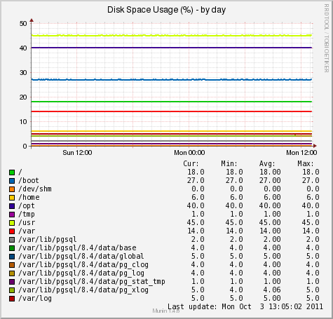
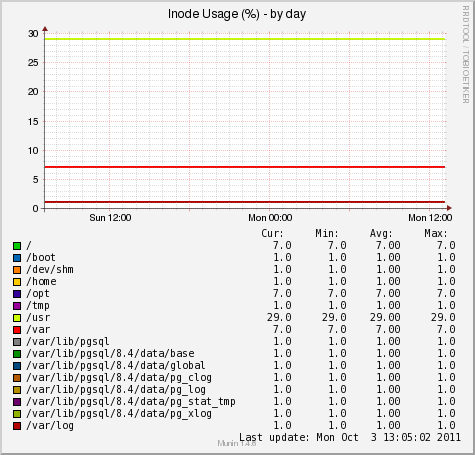

The multigraph plugin implements the following graphs:
|  |  |
| Variable | Description |
|---|---|
| include_fspaths | Comma separated list of filesystems to include in monitoring. (All enabled by default.) |
| exclude_fspaths | Comma separated list of filesystems to exclude from monitoring. |
| include_fstypes | Comma separated list of filesystem types to include in
monitoring. (All enabled by default.) |
| exclude_fstypes | Comma separated list of filesystem types to exclude from monitoring. |
| include_graphs | Comma separated list of enabled graphs. (All graphs enabled by default.) |
| exclude_graphs | Comma separated list of disabled graphs. |